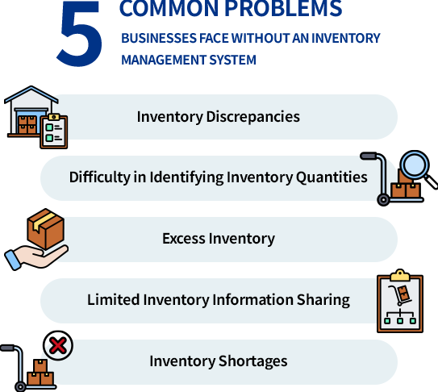
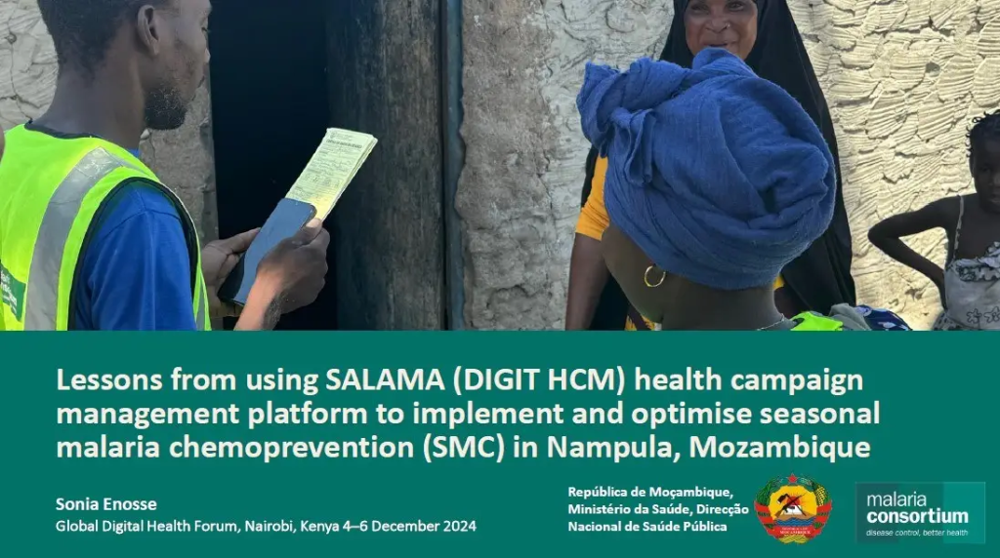

Naved Siddiqui
As a Senior Business Analyst and Product Lead with over a decade of experience, I specialize in
delivering high-impact solutions across Supply Chain Management, E-Commerce, and Government
Services.
I am deeply passionate about modernizing legacy processes through AI-enhanced features. My focus is
on guiding cross-functional teams through the complete SDLC to ensure products are not only
functional but intelligent and data-driven—a methodology I recently applied to successfully launch a
Inhouse OMS and Inventory planning platform integrated with predictive behavioral algorithms and
compliant data architectures.
Domain Expertise
Deep cross-domain expertise spanning e-commerce, supply chain, government digitisation, healthcare, and enterprise digital transformation — enabling the delivery of solutions that are both technically sound and business-relevant.
Supply Chain (SCM)
Modernising global warehousing, complex multi-region logistics, and order management systems.
- Order Management Systems (Cellmark Recycling)
- Inventory Visibility (Pandora IIS team)
- Warehouse & Dispatch automation
- 3PL regional & global integrations
E-Commerce
Building hyper-local marketplaces, cross-border integrations, and seamless user experiences.
- Hyper-local eCommerce (Lulu mobile app)
- B2B Marketplaces (HON Basyx Furniture)
- Marketplace Integration (Amazon & Walmart)
- POS Commerce and store network platforms
Gov Digitisation
Digitising complex manual workflows for public sectors using scalable open-source platforms.
- Process Digitisation on DIGIT Platform
- Sludge Management (Odisha Government)
- Stakeholder alignment & policy mapping
- Public service operations streamlining
Healthcare & HealthTech
Delivering compliant, secure public health platforms and predictive therapy applications.
- Disease Surveillance (Mozambique Health)
- HIPAA Compliant backlog management
- Predictive ML clinical integrations
- Telehealth behavioral algorithms
Digital Transformation
Delivering custom mobile and web solutions to modernize traditional operations and boost user engagement.
- Restaurant Management App (Core Dining)
- Swimming Federation eCommerce (Finland Unidors)
- Role-based access & workflow digital designs
- Cross-platform mobile development roadmaps
Professional Summary
Senior Business Analyst and Product Lead with over a decade of experience delivering high-impact solutions across Supply Chain Management (SCM), E-Commerce, and Government Services. I specialize in modernising legacy inventory planning, order management, and logistics systems using intelligent, data-driven features and automation.
Adept at bridging the gap between complex operations and technology, I guide cross-functional teams through the entire SDLC. My SCM expertise focuses on optimizing supply chain flows, creating real-time inventory visibility, and integrating custom operational software (OMS/WMS) with enterprise ERP frameworks.
Global SCM Architecture
Modernising inventory visibility, unified commerce, and POS/3PL logistics integrations at scale (e.g., Pandora IIS initiatives).
OMS & ERP Integration
Designing order management and warehouse operations systems from intake to financial reconciliation (e.g., Cellmark Recycling & IFS ERP).
Core Strengths
- AI-Enhanced SCM Features
- Robotic Process Automation (RPA)
- Cross-functional Team Leadership
- OMS & ERP System Delivery
- Data-Driven Decision Making
Key SCM Engagements
Career Journey
Contakt Tech Solution
Coordinated project administration and data tracking for major telecom and digital banking portals.
- Managed campaigns for Reliance Communications (Play Along KBC) and NPCI (USSD banking).
- Maintained MIS reports and revenue tracking charts.
- Supported GUI migrations and telecom channel operations.
Sensation Software Solutions
Facilitated stakeholder alignment and business process mapping for enterprise software applications.
- Created detailed process flow diagrams and wireframes (MS-Visio, Balsamiq, Figma).
- Drafted pre-sales technical proposals and functional requirements.
- Supported internal dev teams as the primary conduit for client feedback.
CEDCOSS Technologies
Magento Team E-Commerce specialist, managing sprint planning, backlog grooming, and customer validation.
- Managed project backlogs and sprint iterations via JIRA and Azure DevOps.
- Authored comprehensive BRD, FRD, and SRS documents for e-commerce platforms.
- Guided UAT activities and integrated large marketplaces (Amazon & Walmart).
Tarento Group
Led complex OMS/ERP modernization and SCM transformations, managing cross-functional Agile teams.
- SCM domain lead for Cellmark OMS and Pandora global inventory team.
- Implemented UiPath RPA test workflows, achieving a 30% effort reduction.
- Built interactive project dashboards in Power BI and wireframed UX designs in Figma.
Tarento Group
Led diverse projects across e-commerce, real estate, government services, and healthcare – with a strong focus on Supply Chain Management (SCM) domain leadership, delivering OMS/ERP modernisation and global supply chain transformation across complex environments.
Cellmark Recycling - OMS Nov 2023 – Feb 2025
Order Management System & IFS & Inventory ERP Integration
- Led end-to-end delivery of a custom Order Management System (OMS) for a global recycling commodities trader
- Managed warehouse and inventory management workflows, from inbound stock to dispatch and reconciliation
- Drove integration with IFS ERP, aligning operational data across procurement, logistics, and finance
- Modernised legacy manual processes through automation and real-time inventory visibility
Pandora - Global Supply Chain March 2026 – Present
IIS Team | Unicorn / HERO / Gemini Initiatives
- Embedded within Pandora's global supply chain as part of the IIS (Integrated Information Systems) team
- Contributing to strategic initiatives including Unicorn, HERO, and Gemini — focused on supply chain modernisation for a leading global jewellery brand
- Bridging business and technology to align supply chain operations with enterprise-wide transformation goals
- Applying SCM domain expertise to complex, multi-region logistics and fulfilment challenges
Recognitions & Awards
Key Contributions at Tarento Group
Agile Leadership
Certified Scrum Master managing Scrum Ceremonies, sprint planning, and backlog optimisation. Actively mitigated scope creep and contributed to UAT activities.
Process Automation
Implemented UiPath RPA solutions to streamline UAT, reducing manual testing efforts by approximately 30%.
Data Visualisation
Developed interactive Power BI dashboards for real-time project monitoring, enabling data-driven decision-making and enhanced project transparency.
Design Thinking
Utilised FIGMA and Adobe XD to create user-friendly product interfaces, crafting detailed SRS, BRD, and PRD documentation.
Product Strategy & Roadmap
Defined high-level product visions and mapped multi-quarter release plans, aligning technical roadmaps directly with core business milestones.
Stakeholder & Backlog Management
Prioritized backlog items using value-vs-effort scaling, successfully translating complex customer requests into detailed, developer-ready user stories.
Key Projects
Pandora (SCM): Global Supply Chain Modernisation
As Business Analyst within the IIS team at Pandora — the world's largest jewellery brand — driving analysis across three major global initiatives to modernise supply chain and inventory at scale.
Unicorn
Transitioning global store networks to modern, unified commerce and POS platforms.
HERO
Enhancing inventory visibility to feed smart planning tools so stores never run out of customer favourites.
Gemini
Powering seamless e-commerce and 3PL integrations in critical expanding regions like Brazil.

Cellmark Recycling: Order Management System
Cellmark Recycling is a global recycling and commodities trading company. Led the end-to-end business analysis for a custom Order Management System (OMS) with integrated warehouse and inventory management, built as a full ERP solution integrated with IFS Accounting system.
The custom OMS covered order lifecycle management, warehouse operations, inventory tracking, and commodity trading workflows. Acted as the bridge between stakeholders and the development team, producing detailed BRD, FRD, and process flow documentation. Ensured seamless integration with IFS ERP for financial reconciliation and reporting.
Full ERP Integration
Integrated with IFS Accounting for financial reconciliation and reporting.
Warehouse & Inventory
Custom warehouse operations and inventory tracking management.
Order Lifecycle
End-to-end order lifecycle management from intake to fulfilment.
Trading Workflows
Commodity trading workflow automation for recycling operations.
Documentation
LC, Customer Invoice, BOL Instruction, Shipping Docs logic implemented and Project process flow documentation delivered.
Health Campaign Management: Mozambique
DIGIT is an open-source platform designed to enhance global public health capabilities, alleviating diseases of poverty through digital tools for health campaigns and disease surveillance. Managed the digital transformation of local health campaigns to streamline planning, coordination, and execution.
Collaborated with the Mozambique Ministry of Health (Ministério da Saúde) and the Malaria Consortium to implement the SALAMA (DIGIT HCM) platform for Seasonal Malaria Chemoprevention (SMC) in Nampula. The solution enabled meticulous real-time monitoring, resource optimization, and gap identification for critical health initiatives.

DIGIT Platform Deployment
Leveraged open-source DIGIT HCM architecture for scalable public health campaign execution.
Malaria Chemoprevention (SMC)
Optimized seasonal malaria chemoprevention delivery across Nampula province.
Stakeholder Collaboration
Partnered with Mozambique's Ministry of Health and the Malaria Consortium to align digital workflows.
Real-Time Surveillance
Provided meticulous monitoring, tracking campaign progress and identifying coverage gaps instantly.
Field Digitisation
Enabled offline-first data entry for community health workers on the ground, increasing reporting speed.
Other Notable Projects
E-Commerce Engagements
Lulu Hyper-local eCommerce
Flutter mobile app for Lulu Group's hypermarket, featuring promotions, gift card integration, and additional e-commerce functionality for the Gulf region.
HNI: HON Basyx Furniture
B2B e-commerce marketplace on Magento-2 Commerce Cloud. Responsible for requirements analysis, stakeholder liaison, Scrum ceremonies, and regression testing.
Zeo Market – eCommerce
India's online retail platform offering diverse products. Integrated Zeo Market Store with giant marketplaces Amazon and Walmart.
Enterprise & Public Sector Initiatives
Sludge Management – Odisha Govt
Digitised the complete manual sludge management process for the Government of Odisha on the DIGIT Platform, covering sludge collection and treatment workflows.
Arcade Therapeutics – StarStarter
Spearheaded development of a cross-platform mental health solution. Integrated predictive ML models with clinical screening tools (PHQ-2/GAD-2). Managed HIPAA compliance backlog.
Core Dining & Unidors App
Core Dining: Role-based restaurant management app. Unidors: eCommerce mobile app for the Finnish Swimming Federation's product range.
Skills & Competencies
Product Strategy & Leadership
Product Lifecycle Management (PLM)
Steering products from conception to sunset, aligning stakeholders, and optimizing launch strategy.
Agile & Scrum Leadership
Managing sprint cycles, running Scrum ceremonies (daily standups, reviews, retros), and optimizing product backlogs using Scrum & Kanban frameworks.
Strategic Roadmapping & UX Strategy
Mapping high-level visions to multi-quarter releases, prioritizing UX enhancements to maximize user adoption and business value.
Stakeholder Management
Bridging the gap between corporate sponsors, end-users, and software engineering teams to resolve complex product priorities.
Business Analysis
Requirement Elicitation & Analysis
Conducting workshops, interviews, and audits to extract precise business needs and define technical scopes.
Use Case Development
Crafting clear and detailed functional scenarios, user stories, and acceptance criteria to direct developer execution.
Solution Assessment & Validation
Evaluating developed software systems against core business objectives and running UAT sessions to guarantee quality.
Detailed Documentation
Authoring comprehensive project artifacts including Business (BRD), Product (PRD), Functional (FRD), and Software Requirements Specifications (SRS).
Power BI
Data & AnalyticsDeveloping interactive analytics portals and real-time dashboards to facilitate data-driven decisions and track KPIs across business lines.
UiPath RPA
AutomationAutomating repetitive user tasks, data synchronization pathways, and testing runs to boost organizational efficiency by approximately 30%.
JIRA / Azure DevOps
Agile DeliveryManaging sprint backlogs, release tracking, Epic mappings, and task boards to orchestrate streamlined developer collaborations.
Figma / Adobe XD
UI/UX DesignDesigning interactive high-fidelity mockups, low-fidelity wireframes, and user flow architectures to align design ideas before development.
Data Mapping & Visio
Process ModelingDrafting process flowcharts, sequence diagrams, and cross-functional flow maps to identify bottlenecks and design streamlined database structures.
Education & Credentials
Amity University
B.Tech – Information Technology
August 2007 – June 2011Sri Balaji University (BITM), Pune
Post Graduate Diploma in Management (PGDM)
July 2012 – April 2014Professional Certifications
Click on any credential card to view the official certificate image.
AI Enterprise Product Management
MicrosoftCertified Scrum Master (CSM)
Scrum AllianceBusiness Analysis Fundamental
UdemyLet's Connect
Open to exciting opportunities in Product Management, Business Analysis, and Digital Transformation across global markets.